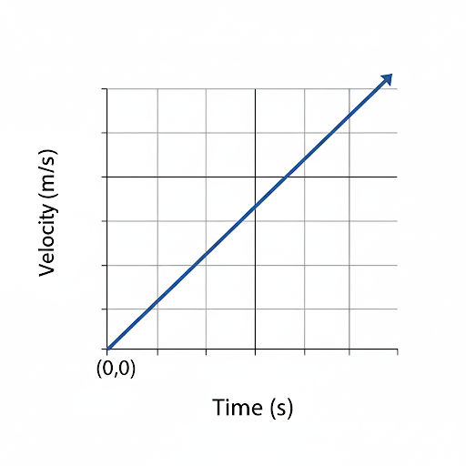
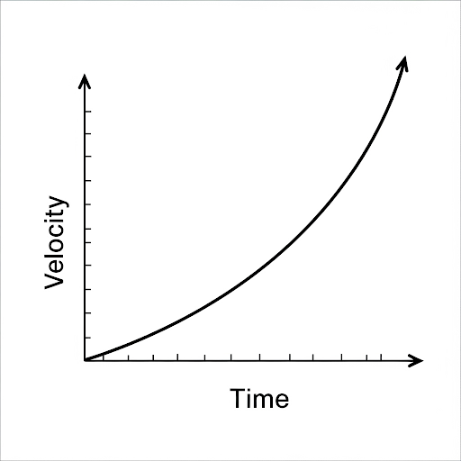

3.7 Velocity-Time Graphs
A velocity-time graph shows how the velocity of an object changes over time. It is a powerful tool for studying acceleration and calculating displacement.
Graph for Uniform Acceleration
When acceleration is constant, the velocity changes at a steady rate. This produces a straight line graph.
The slope of this line equals the constant acceleration of the object.
Graph for Non-Uniform Acceleration
If acceleration is not constant, the velocity-time graph will be curved.
The slope changes at different points, indicating varying acceleration.
Important Relationships
- Acceleration from slope: \[ a = \frac{\Delta v}{\Delta t} \] where \( \Delta v \) is the change in velocity and \( \Delta t \) is the change in time.
- Displacement from area under graph: The total displacement is equal to the area enclosed between the graph line and the time axis.
Interpreting Velocity-Time Graphs
- Horizontal line: Velocity is constant (zero acceleration).
- Upward sloping line: Positive acceleration.
- Downward sloping line: Negative acceleration (deceleration).
- Area under the line: Represents displacement of the object.
Real-Life Application
Velocity-time graphs are widely used in transportation and sports analytics. For example, a sprinter’s performance can be analyzed by plotting their speed over time, identifying points of acceleration and fatigue.